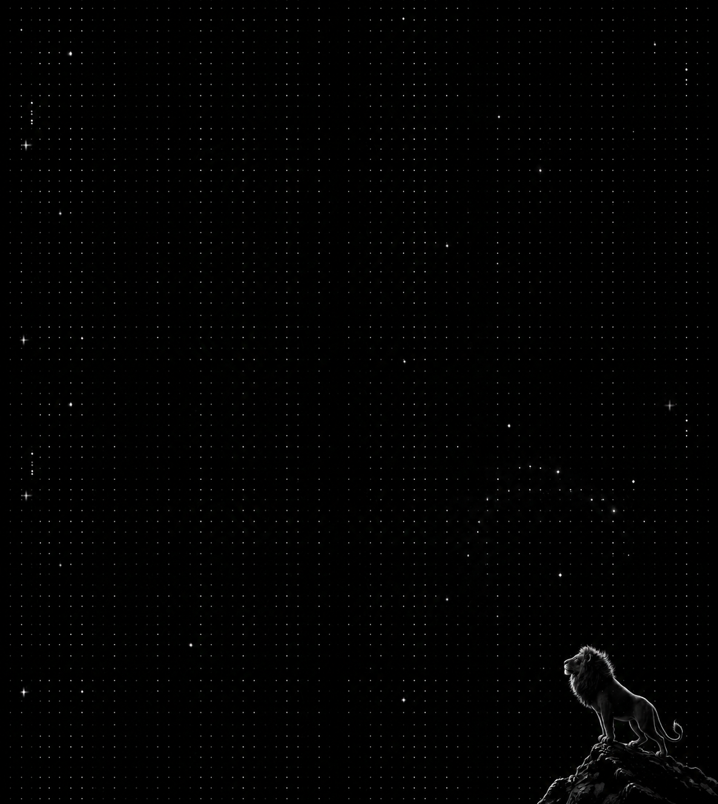
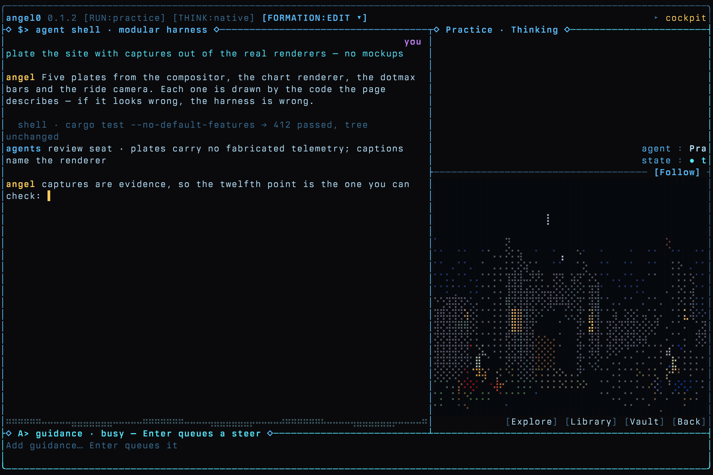
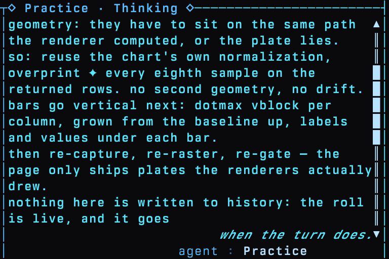
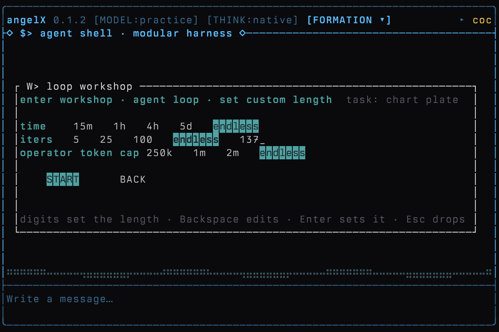
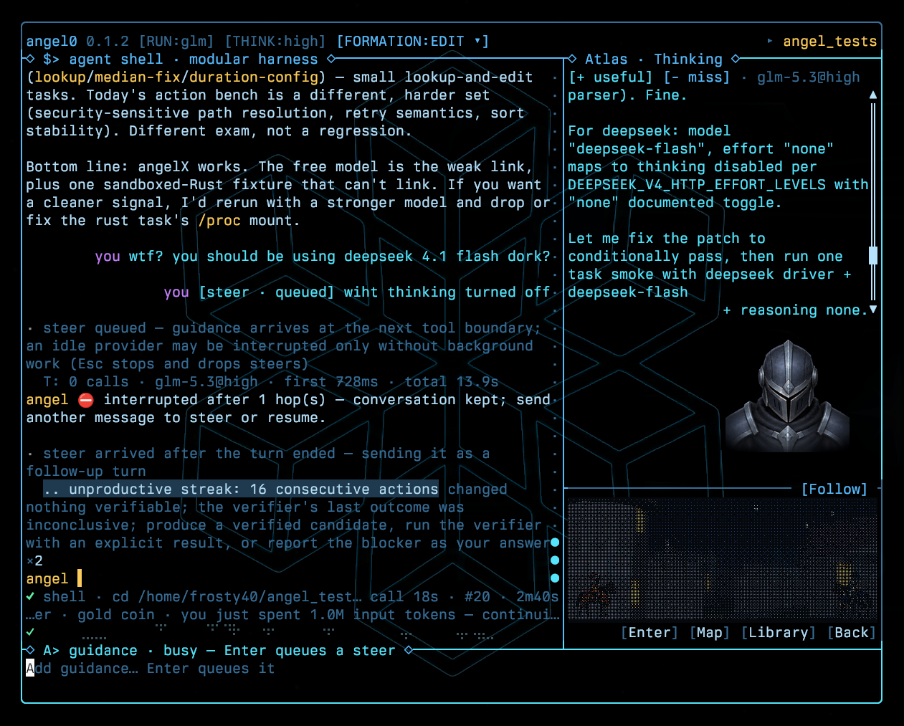

Follow Your Star —
Discover the Unknown
A self referential world model harness built for customization and long form agentic enjoyment.
ONE-COMMAND LINUX INSTALL · x86_64 · BUILDS FROM SOURCE ON FIRST RUN
git clone https://github.com/newjordan/angelX.git && cd angelX && ANGEL_VIDEO=0 ./bin/angelX
AngelX created by Jordan Newman @frostforger
DEEPSEEK V4.1 FLASH · THINKING OFF
GLM-5.3-FLASH · THINKING LOW
DEEPSEEK V4.1 FLASH · THINKING OFF
GLM-5.3-FLASH · THINKING LOW
DEEPSEEK V4.1 FLASH · THINKING OFF
GLM-5.3-FLASH · THINKING LOW
DEEPSEEK V4.1 FLASH · THINKING OFF
GLM-5.3-FLASH · THINKING LOW
* All tests performed on the Prime Intellect evaluators (Verifiers v0.3.1) · prime-quality-v1: 18 repository-repair tasks (8 JS, 7 Python, 3 Rust), 3 runs per harness per model, 324 graded attempts, pass/fail decided by each task’s own tests · angelX a5e788f · oh-my-pi 18.2.4 · opencode 1.18.31 · DeepSeek V4.1 Flash, thinking off · GLM-5.3-Flash, thinking low (the model’s floor) · temperature 0 · 8,192-token output cap · fresh environment per attempt · 2026-09-21
A one of a kind TUI experience.
Multi-panel TUI with unique and customizable model feedback.

Sightings.




Points of light.
Models and formations
Choose models and thinking levels, configure teams, and run agent graphs.
Repository tools
Search files, inspect symbols, follow definitions, and review diffs.
Content-checked edits
Hashline editing checks file content before applying anchored changes.
Programmable tools
Run tool calls, loops, and filters locally in JavaScript with code_mode.
Long-session context
Compact, deduplicate, and age retained context as work continues.
Project memory
Review source-linked knowledge in Atlas and reuse it in later tasks.
Persistent goals
Resume sessions and autonomous work with configurable run limits.
Headless runs
Record task settings, source identity, tool activity, and acceptance evidence.
Measured campaigns
Evaluate isolated attempts with verifiers and independent review.
Research loops
Use Sloptomizer suggestions, Deli deliberation, and paired experiments.
Measured benchmarks
Calculate measured changes from paired benchmark samples.
World TUI
Introducing world tui foundations for reviewing work, building internal world models, presenting data graphs and agent behavior.
A coding and research harness.
angelX is a tool for explorers pushing the boundaries of research with AI. It is also a coding tool, a mini world, and a growing, self-reflective piece of software — built to evolve over time and adapt to the person driving it.
Under the hood: 200k+ lines of Rust focused on performance in autoresearch, agentic fleet control, and coding.
- CUSTOM TUI LAYOUT
- agent thinking · actions as primary surfaces
- DEEP TOOLING
- research · loops
- WORLD MODEL
- self-referential · adapts per user
- FIELD PROVEN
- kernel · cryptography research